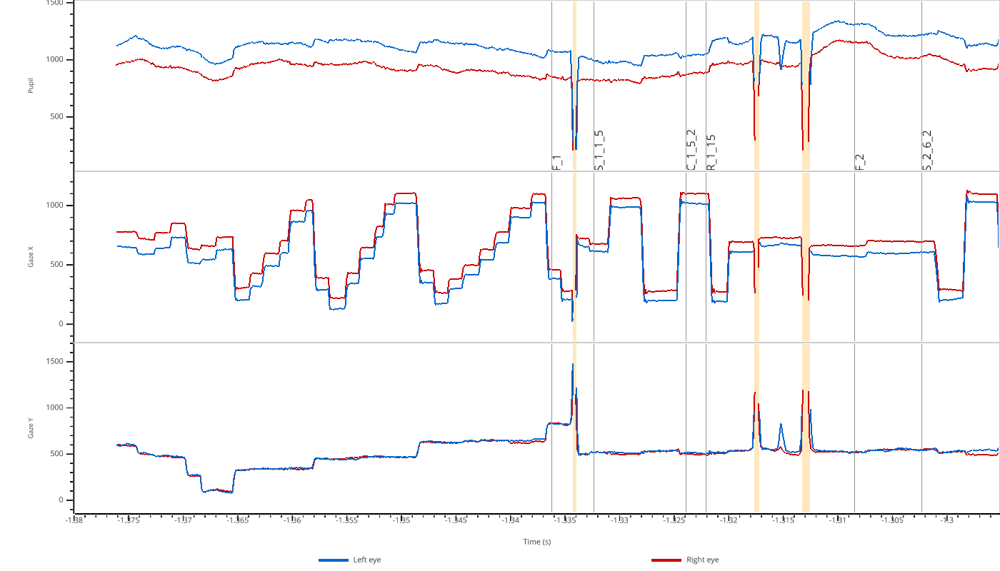
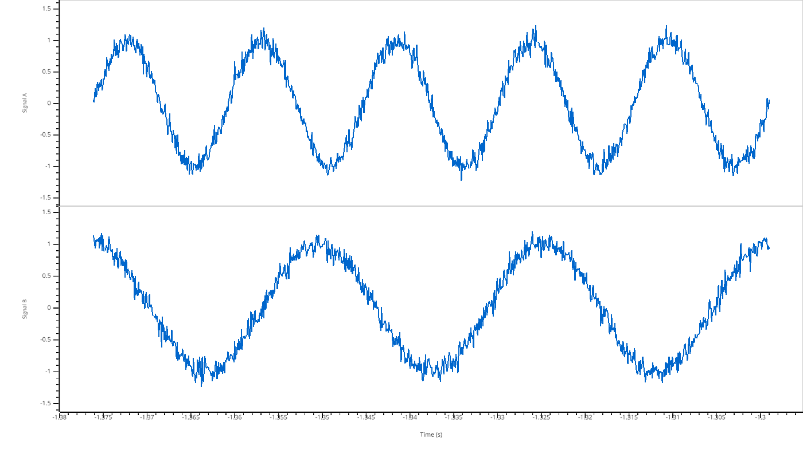
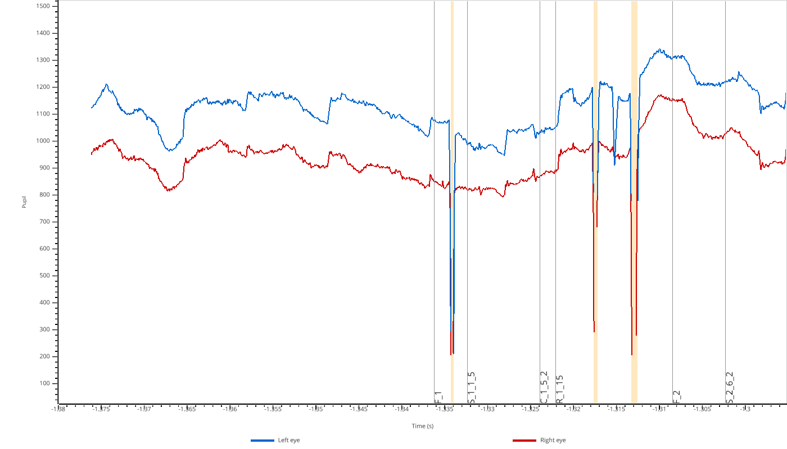
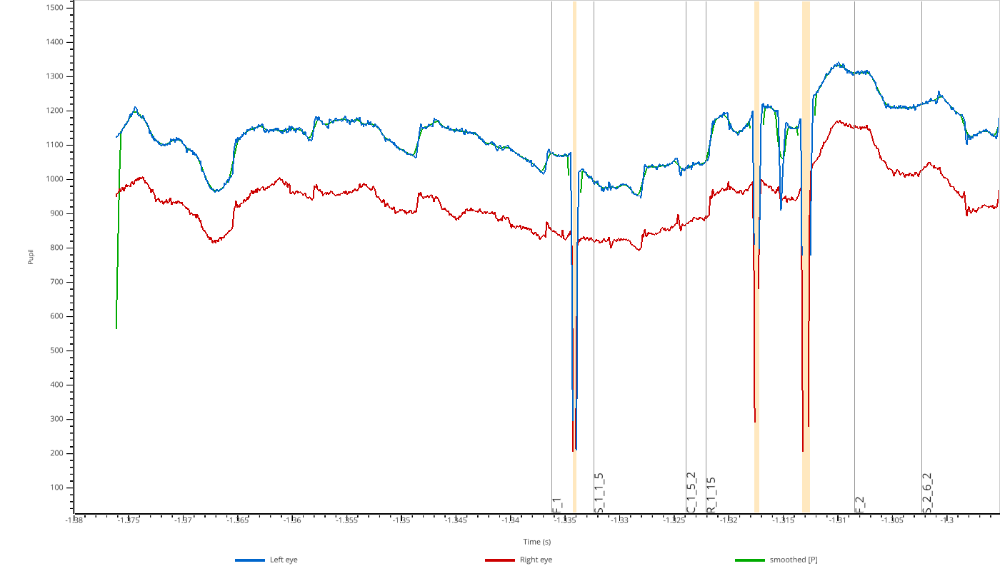
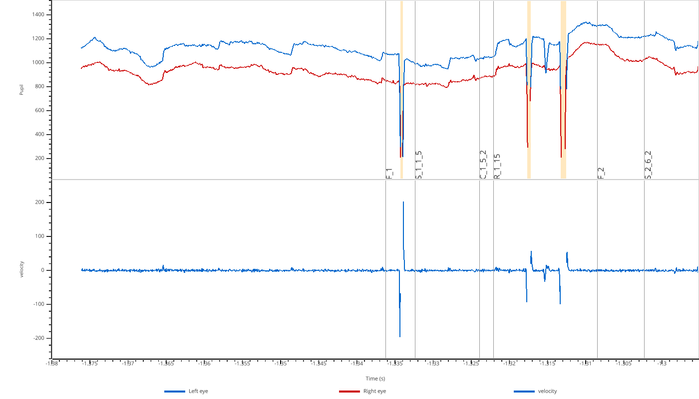

GPU-Accelerated Viewer (pp.view)¶
The view() function provides a GPU-accelerated interactive viewer for exploring eye-tracking data. It is designed for smooth navigation of long recordings (60+ minutes at 1000 Hz) using VisPy for OpenGL rendering.
Keyboard shortcuts: Press H or ? in the viewer to see all available keyboard shortcuts for navigation, zooming, and toggling display options.
Viewing EyeData Objects¶
The simplest use case is viewing an EyeData object directly:
import pypillometry as pp
eyedata = pp.get_example_data("rlmw_002_short")
pp.view(eyedata)
{kind=link}

The viewer automatically creates subplots for each modality (pupil, x, y) and shows both left (blue) and right (red) eye data. Masked regions are highlighted in orange.
Viewing Numpy Arrays¶
You can also view raw numpy arrays. Use a dictionary to create multiple subplots:
import numpy as np
import pypillometry as pp
# Create synthetic signals
t = np.linspace(0, 10, 1000)
signal_a = np.sin(2 * np.pi * 0.5 * t) + np.random.randn(1000) * 0.1
signal_b = np.cos(2 * np.pi * 0.3 * t) + np.random.randn(1000) * 0.1
pp.view({"Signal A": signal_a, "Signal B": signal_b}, time=t)
{kind=link}

Filtering Variables¶
For EyeData objects, you can filter which modalities to display using the variables parameter:
import pypillometry as pp
eyedata = pp.get_example_data("rlmw_002_short")
pp.view(eyedata, variables=['pupil'])
{kind=link}

Valid values are 'pupil', 'x', and 'y'.
Adding Overlays¶
You can overlay additional data on top of the main plots for comparison. This is useful for visualizing the effect of processing steps:
import numpy as np
import pypillometry as pp
eyedata = pp.get_example_data("rlmw_002_short")
# Create a smoothed version of the pupil signal
pupil = np.array(eyedata['left_pupil'])
kernel = np.ones(50) / 50
smoothed = np.convolve(pupil, kernel, mode='same')
pp.view(eyedata, variables=['pupil'], overlay_pupil={'smoothed': smoothed})
{kind=link}

Use overlay_pupil, overlay_x, or overlay_y to add overlays to the respective subplots.
Extra Subplots¶
You can add additional subplots below the main EyeData variables using extra_plots:
import numpy as np
import pypillometry as pp
eyedata = pp.get_example_data("rlmw_002_short")
# Compute velocity (derivative of pupil size)
pupil = np.array(eyedata['left_pupil'])
velocity = np.gradient(pupil)
pp.view(eyedata, variables=['pupil'], extra_plots={'velocity': velocity})
{kind=link}

Interactive Selection¶
The viewer supports interactive region selection:
Press
Sto enter selection modeClick and drag to select a region
Press
DorBackspaceto remove the last selectionWhen you close the viewer, selected regions are returned as
Intervalsobjects
import pypillometry as pp
eyedata = pp.get_example_data("rlmw_002_short")
# View data and select regions
selections = pp.view(eyedata, variables=['pupil'])
# selections is a dict of Intervals if any regions were selected
if selections:
print(selections)
API Reference¶
- pypillometry.view(data, variables=None, time=None, overlay_pupil=None, overlay_x=None, overlay_y=None, extra_plots=None, highlight=None, highlight_color='lightblue')[source]¶
View eye-tracking data or numpy arrays with GPU-accelerated rendering.
Opens an interactive viewer window using VisPy for fast GPU-based rendering. Suitable for long recordings (60+ minutes at 1000 Hz).
- Parameters:
data (EyeData, ndarray, list of ndarrays, or dict) –
Data to view. Supports multiple input types:
EyeData object: Eye-tracking data with tx attribute and dictionary-like access to modalities (left_pupil, right_x, etc.)
ndarray or MaskedArray: Single array displayed as one plot
list of arrays: Multiple arrays overlaid in one plot with different colors
dict of arrays: Keys become plot labels (y-axis), values are arrays or lists of arrays. Example:
{"upper": [x, y], "lower": z}creates two subplots with x,y overlaid in “upper” and z in “lower”
variables (list of str, optional) – For EyeData objects only. Filter which modalities to display. Valid values: ‘pupil’, ‘x’, ‘y’. Default: show all available. Example:
variables=['pupil']shows only pupil data.time (ndarray, optional) – Time vector for raw array viewing. If not provided, uses sample index (0, 1, 2, …). Should have same length as data arrays.
overlay_pupil (dict, optional) – (EyeData only) Additional timeseries to overlay on the pupil plot. Keys are labels for legend, values are either: - str: name of data in eyedata.data (e.g., ‘left_pupil_filtered’) - array-like: timeseries of same length as eyedata
overlay_x (dict, optional) – (EyeData only) Additional timeseries to overlay on the gaze X plot.
overlay_y (dict, optional) – (EyeData only) Additional timeseries to overlay on the gaze Y plot.
extra_plots (dict, optional) – (EyeData only) Additional numpy arrays to display as separate subplots below the EyeData variables. Keys become subplot labels (y-axis), values are arrays or lists of arrays. Arrays must have the same length as the EyeData. Example:
extra_plots={"velocity": vel, "custom": [a, b]}highlight (Intervals or dict, optional) – Intervals to highlight in the plots. Can be: - An Intervals object (applied to all plots) - A dict mapping variable type (‘pupil’, ‘x’, ‘y’) to Intervals objects
highlight_color (str, optional) – Color for highlighted regions (default: ‘lightblue’)
- Returns:
If regions were selected (using ‘s’ key + mouse clicks), returns a dict mapping plot label to Intervals objects containing the selected regions in seconds. Returns None if no selections were made.
- Return type:
Optional[Dict[str, Intervals]]
- Raises:
ValueError – If arrays have different lengths.
TypeError – If data type is not supported.
Notes
Keyboard controls:
Left/Right arrows: Pan 10% of view
Up/Down arrows: Zoom in/out 20%
PgUp/PgDn: Pan 50% of view
Home/End: Jump to start/end
Space: Reset to full view
+/-: Zoom in/out
M: Toggle mask regions (EyeData only)
O: Toggle event markers (EyeData only)
S: Enter selection mode (drag to mark a region)
D/Backspace: Remove last selection
H/?: Show help
Q/Esc: Close viewer
Examples
View EyeData:
>>> import pypillometry as pp >>> data = pp.EyeData.from_eyelink('recording.edf') >>> pp.view(data) >>> pp.view(data, variables=['pupil']) # Only show pupil plots
View numpy arrays:
>>> import numpy as np >>> x = np.random.randn(1000) >>> y = np.random.randn(1000) >>> pp.view(x) # Single array >>> pp.view([x, y]) # Multiple arrays in one plot >>> pp.view({"Signal 1": x, "Signal 2": y}) # Two separate plots >>> pp.view({"upper": [x, y], "lower": x + y}) # Complex layout
With time vector:
>>> t = np.linspace(0, 10, 1000) # 10 seconds >>> pp.view(x, time=t)
EyeData with overlays:
>>> smoothed = np.convolve(data['left_pupil'], np.ones(100)/100, 'same') >>> pp.view(data, overlay_pupil={'smoothed': smoothed})